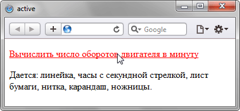

Псевдокласс :active
Псевдокласс :active определяет стиль активного элемента. Это такое состояние элемента, которое происходит между щелчком и отпусканием клавиши мыши. В основном применяется к ссылкам и кнопкам, но ими не ограничен.
Синтаксис
Селектор:active { ... }Пример
<!DOCTYPE html>
<html>
<head>
<meta charset="utf-8">
<title>active</title>
<style>
a:link {
color: #0000d0; /* Цвет ссылок */
}
a:visited {
color: #900060; /* Цвет посещенных ссылок */
}
a:active {
color: #f00; /* Цвет активной ссылки */
}
</style>
</head>
<body>
<p><a href="task1.html">Вычислить число оборотов двигателя в минуту</a></p>
<p>Дается: линейка, часы с секундной стрелкой, лист бумаги, нитка,
карандаш, ножницы.</p>
</body>
</html>В данном примере задаётся цвет обычных, посещённых и активных ссылок. Результат примера показан на рис. 1.

Рис. 1. Результат использования псевдокласса :active
Примечание
Internet Exporer до версии 8 и Opera до версии 7 поддерживают :active только для ссылок.
Спецификация
| Спецификация | Статус |
|---|---|
| Selectors Level 4 | Рабочий проект |
| Selectors Level 3 | Рекомендация |
| CSS Level 2 (Revision 1) | Рекомендация |
| CSS Level 1 | Рекомендация |
Браузеры
| Internet Explorer | Chrome | Opera | Safari | Firefox | ||
| 4 | 8 | 1 | 5 | 7 | 1 | 1 |
| Android | Firefox Mobile | Opera Mobile | Safari Mobile |
| 1 | 1 | 6 | 1 |